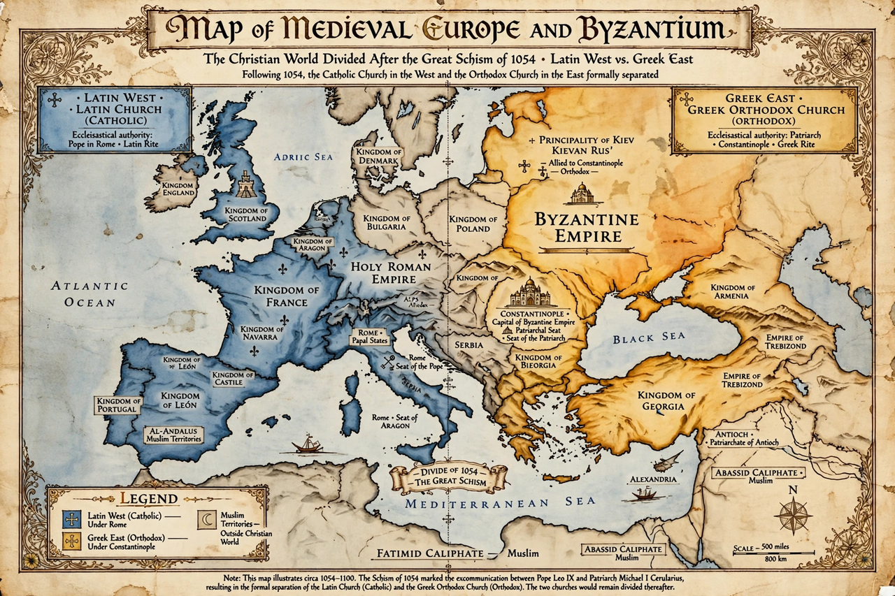

| East–West Schism | |
|---|---|
| Date | 1054 (mutual excommunications); division consolidated over following centuries |
| Type | Christian schism |
| Causes | Ecclesiastical disputes over papal authority; theological disputes including the Filioque |
| Outcome | Division into the Roman Catholic Church and the Eastern Orthodox Church |

The East–West Schism, also known as the Great Schism or the Schism of 1054, is the break of communion between the Catholic Church and Eastern Orthodox Church since 1054. A series of ecclesiastical differences and theological disputes between the Greek East and Latin West preceded the formal split that occurred in 1054.
Prominent among these were the issues of the procession of the Holy Spirit (Filioque), whether leavened or unleavened bread should be used in the Eucharist, iconoclasm, and the position of the See of Constantinople in relation to the Pentarchy.
In 1054, Roman legates travelled to Constantinople to deny Patriarch Michael I Cerularius the title of "ecumenical patriarch" and to insist that he recognize Rome's claim of primacy. Cerularius refused. The leader of the legation, Cardinal Humbert of Silva Candida, excommunicated Cerularius, while Cerularius in return excommunicated the legates. The mutual excommunications were lifted only in 1965 by Pope Paul VI and Patriarch Athenagoras I.
The sacking of Constantinople by Latin crusaders in 1204 during the Fourth Crusade deepened the divide. Attempts at reunion at the councils of Lyon (1274) and Florence (1438–39) ultimately failed. The schism remains in place today, though dialogue between the churches has continued in recent decades.
See also: Filioque · Eastern Orthodox Church · Fourth Crusade · Michael I Cerularius